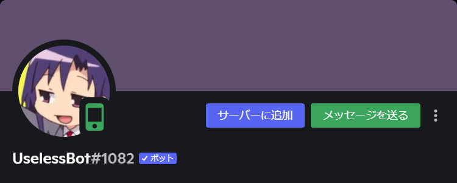

UselessBot
KabanFriendsが開発したDiscordのBOTです
使い道に困るコマンドが大量に搭載されいるのでなんかすごいです

UselessBotができること (例)
画像を生成する (/mariomaker, /moon等)
画像にエフェクトをかける (/glitch, /lego, /package等)
チャンネル内で「ワードウルフ」をプレイする (/wordwolf)
電卓で計算する (/dentaku)
ランダムな猫や犬の画像を表示する (/neko, /inu)
その他諸々
UselessBotを導入する
UselessBotサポートサーバー